Cortejo
Cheguem às 15h30 minutos antes da cerimônia
Para o alinhamento dos últimos detalhes. Todos já vestidos, com as peças que vieram na caixa.
Com carinho…

Stanlei & Fernanda
15 · 08 · 2027
Praia do EstaleiroBalneário Camboriú
Como você chega até nós?
Que bom ter você com a gente.
Vocês estão no centro desse dia.
Role para baixo
Faltam
Cortejo
Cheguem às 15h30 minutos antes da cerimônia
Para o alinhamento dos últimos detalhes. Todos já vestidos, com as peças que vieram na caixa.
Cerimônia
15 de agosto de 2027às 15:30
Praia do Estaleiro
Balneário Camboriú / SC
Recepção
Salão Indaiáàs 17:00
Itapema / SC
15 a 20 min de carro da praia
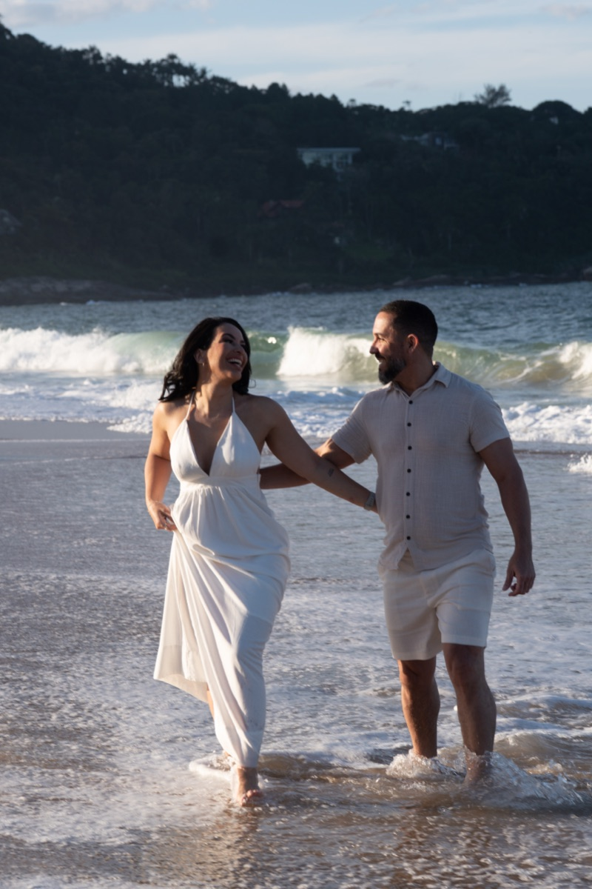
Não foi planejado.
Teve desafios, incertezas, desencontros.
Mas algumas histórias começam assim: testando se vale a pena.
E valeu.
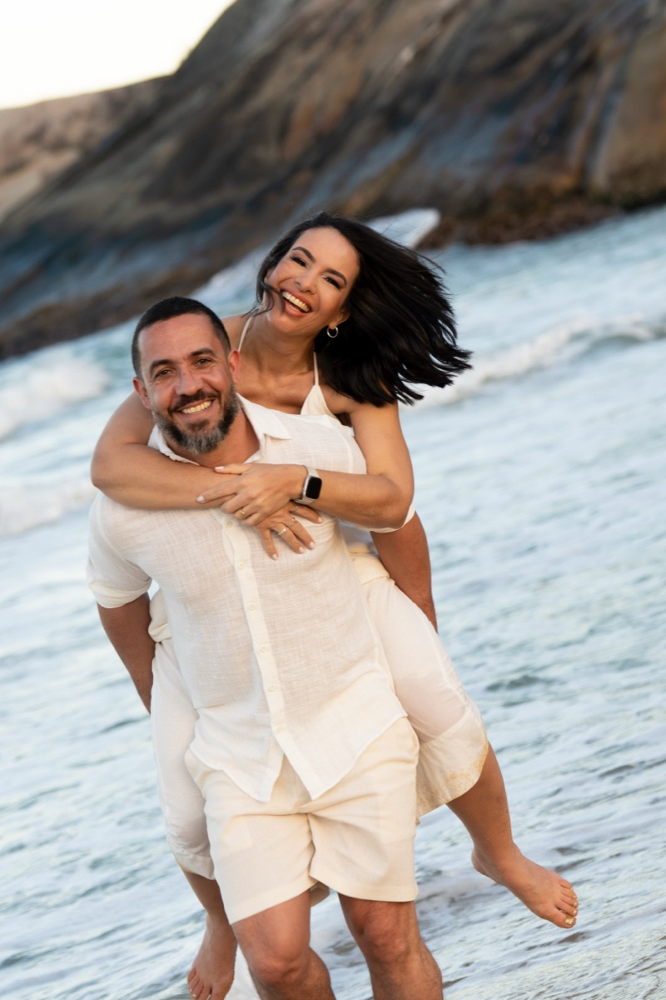
Aos poucos, a vida foi nos aproximando.
Dia após dia, a dúvida virou vontade.
E a vontade virou certeza.
Somos diferentes. E ainda bem.
Um é pausa, o outro é melodia.
Um acalma, o outro acende.
Foi nas nossas diferenças que encontramos equilíbrio.
Afinal, o som só existe porque há silêncio.
A luz só brilha porque conhece o escuro.
Há coisas que não têm explicação.
Elas simplesmente se completam.
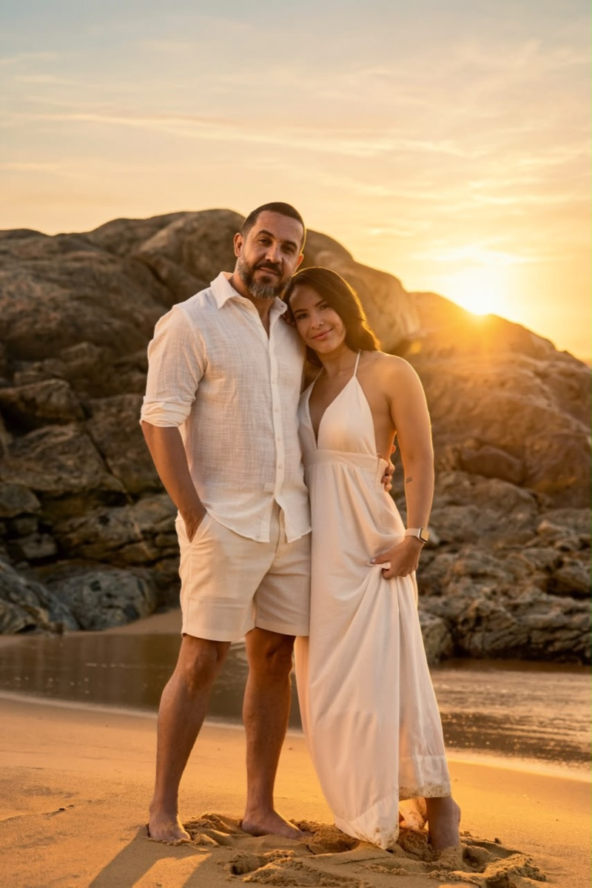
Hoje, olhamos para trás e entendemos.
Nada foi por acaso.
Cada passo nos trouxe até aqui.
E aqui, decidimos o mais bonito de tudo:
passar o resto da vida juntos.
Padrinhos, madrinhas, pais, filhos e crianças do cortejo. A sua gravata, pulseira ou peça já está na caixa. Aqui vai o resto: cores, tecidos, calçado e o que o vento da praia exige de cada um.
Domingo, 15 de agosto de 2027. Cerimônia na Praia do Estaleiro, em Balneário Camboriú, e recepção no Salão Indaiá, em Itapema — cerca de 10 km entre um e outro. A pontualidade das 15h não é formalidade: é o tempo de alinhar a fila, conferir os detalhes e fazer as fotos com calma antes da cerimônia começar. Fotos são importantes para o registro desse momento inesquecível: tirem muitas!
Todos já vestidos, com a gravata e a pulseira que vieram nesta caixa, e posicionados. Meia hora de folga para ajustar o que precisar, cumprimentar e fotografar antes de todo mundo chegar.
Com crianças: elas já vestidas, com as peças da caixa. Meia hora para se acostumarem com a areia, o vento e o barulho do mar antes de todo mundo chegar — com criança pequena, esse tempo muda tudo.
Na areia do Estaleiro, com o sol ainda alto mas já caindo. Padrinhos de paletó fechado. Em seguida, as fotos com a luz de fim de tarde.
Com crianças: cada uma tem um adulto de referência combinado antes, que fica sentado na ponta da primeira fila, à vista. Quem não quiser entrar na hora, não entra — e está tudo bem.
São cerca de 10 km do Estaleiro até o salão, em Itapema — de 15 a 20 minutos de carro em condições normais. Saiam da praia assim que as fotos terminarem. É no carro que dá para trocar o calçado e pegar o agasalho: a temperatura cai de forma perceptível nessa hora.
Com crianças: é no trajeto que dá para trocar o calçado, limpar a areia e oferecer um lanche.
A paleta oficial vai do oliva profundo ao champanhe — é a mesma dos convites, da decoração e das mesas. O marsala entra apenas nos pais dos noivos e nos filhos, marcando quem é família.
Fora da paleta decorativa, estas são as cores que vocês vão às compras procurar.
São só quatro. Cada grupo tem a sua, e o branco atravessa os três.
Escolha o seu. As ilustrações mostram as cores exatas de cada peça — os tons dos cinzas e dos marrons são referências, não precisam ser idênticos ao pixel, mas devem ficar dentro da mesma família.
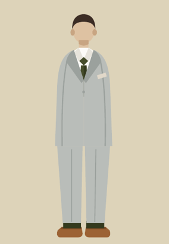
O marrom caramelo e o verde oliva são tons terrosos da mesma temperatura: é por isso que funcionam juntos. O preto quebra essa lógica e pesa demais sobre o cinza claro.
Inspiração
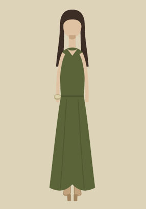
Salto fino afunda na areia logo no primeiro passo. A base larga do salto bloco resolve a praia sem abrir mão da altura — e, se quiserem, o salto fino volta no salão, às 17h.
Inspiração
Vocês não precisam achar o verde exato — precisam ficar dentro da família. Estes são os três tons liberados para o vestido, na ordem do mais escuro ao mais claro. Qualquer verde oliva entre eles funciona.
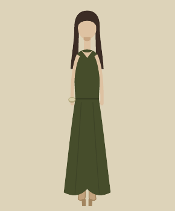
Oliva profundo#464D2B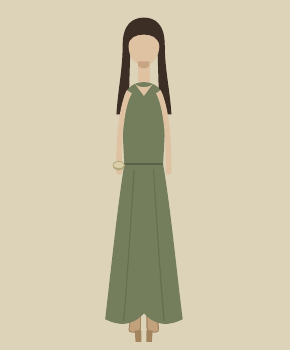
Oliva médio#747E5C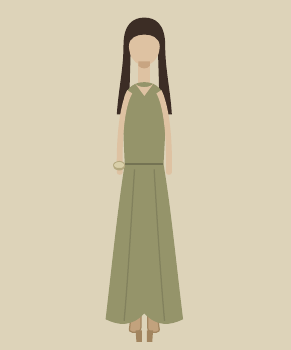
Oliva claro#95946AÉ verde oliva, do vestido aos acessórios. Os dois tons mais claros da paleta do casamento — sálvia e champanhe — ficam por conta da decoração, não do traje das madrinhas. Na areia, de longe, eles leem como bege claro e se aproximam demais do vestido da noiva.
Duas formas de combinar, as duas certas: ou todas no mesmo tom, para um bloco de cor firme na fila; ou espalhadas entre os três verdes, criando um degradê natural nas fotos. Combinem entre vocês antes de comprar — o que não funciona é uma sozinha num tom muito diferente das demais.
Tecido: prefiram tecidos com caimento e pouco brilho — crepe, musseline, zibeline fosca. Cetim muito brilhante reflete o sol da praia e estoura nas fotos.
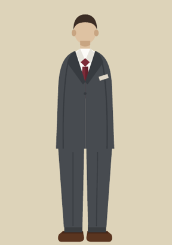
O marsala tem fundo avermelhado, e o marrom café puxa a mesma temperatura: por isso o par fica mais rico do que com preto.
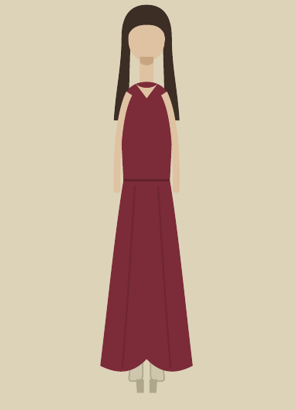
Para as mães, o marsala do vestido é a única definição. Sapato, acessórios, agasalho e penteado ficam inteiramente a critério de cada uma.
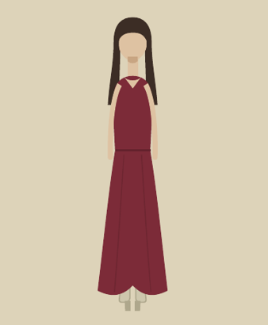
Quem usa marsala é a família: as mães, a filha da noiva e o filho do noivo. É o que distingue visualmente o núcleo familiar da fila de padrinhos e madrinhas em verde oliva.
O look é o mesmo dos pais dos noivos, em escala menor. Se o terno infantil sair num chumbo levemente diferente, tudo bem: o que importa é a família ler como um bloco nas fotos.
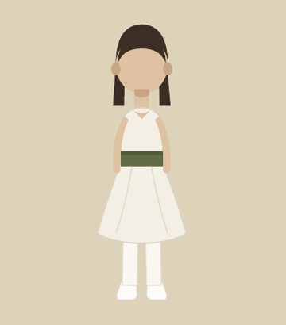
2 crianças
Com as menores, conforto manda em tudo. Vestido que não aperte e que deixe andar livre, sapato macio e já usado, e nada de etiqueta raspando o pescoço — é o que separa uma criança sorrindo de uma criança chorando nas fotos.
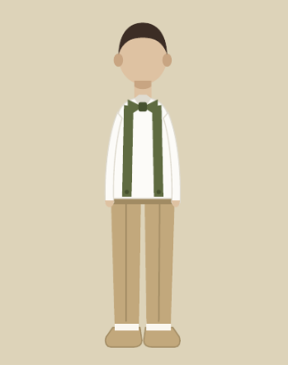
2 crianças
O verde oliva do suspensório e da gravata é o mesmo das gravatas dos padrinhos: é o que liga visualmente os pajens ao cortejo. Importante: o suspensório substitui o cinto — usar os dois juntos não funciona nem fica bem.
2 crianças
Eles são os únicos de preto na cerimônia inteira, e isso é proposital: marca a função deles. Expliquem o cargo antes — criança leva a sério carregar as alianças, e isso costuma resolver o nervosismo da entrada.
A regra que vale para todos os homens: o cinto tem a mesma cor e o mesmo acabamento do sapato. O que muda entre os padrinhos e os pais é a intensidade do marrom, acompanhando a intensidade do cinza do terno.
Marrom carameloreferência #9C6234
Couro liso, em modelo oxford, derby ou mocassim. O marrom médio é o par clássico do cinza claro e conversa diretamente com o verde oliva — os dois são tons terrosos, da mesma temperatura.
Evitem o preto. Com cinza claro ele cria um contraste duro, formal demais, que destoa da areia e aparece como um bloco escuro nas fotos.
Marrom caféreferência #5A3520
O marsala tem fundo avermelhado, e o marrom escuro puxa exatamente essa mesma temperatura — dá sofisticação sem pesar. Couro liso, em modelo oxford ou derby, porque o cinza chumbo é o traje mais formal do grupo.
O preto também funciona e é aceitável para quem preferir algo mais tradicional, mas o marrom escuro fica mais elegante ao lado do marsala.
Detalhes que valem para os dois grupos: fivela discreta e prateada (o dourado briga com o cinza); nada de verniz; meia longa, na cor do sapato ou do terno, nunca branca e nunca curta a ponto de mostrar a canela quando sentar.
Na areia: caminhem pelo trecho de areia seca e evitem a faixa molhada, que mancha couro. Levem um pano macio no carro — cinco segundos de pano tiram a poeira de areia antes das fotos.
Este é o ponto que mais causa problema em casamento de praia, e a solução é simples.
Salto bloco, anabela ou flatform. A base larga distribui o peso e não afunda na areia. Salto fino ou stiletto entra na areia no primeiro passo, obriga a andar na ponta do pé e aparece torto em todas as fotos da fila.
Cor sugerida: nude, dourado fosco ou caramelo — tons que alongam a perna, combinam com o verde oliva e desaparecem discretamente na areia.
Quem quiser, troca. No piso do salão o salto fino volta a ser confortável e seguro. Deixem o segundo par no carro ou com alguém da organização, e façam a troca no intervalo entre a praia e a entrada.
Se preferirem um par só, mantenham o salto bloco: ele funciona igualmente bem nos dois ambientes e vocês vão passar várias horas de pé.
A pulseira veio nesta caixa. Todas as madrinhas usam a mesma — é o elemento que une os looks. Por isso, deixem o pulso livre: nada de segundo bracelete ou relógio grande no mesmo braço. Brincos e colar ficam a critério de cada uma, preferencialmente dourados.
Nada será entregue no dia do casamento. Cada um recebeu a sua peça junto com o manual, meses antes.
Guardem com cuidado. Falta bastante tempo até agosto de 2027 — deixem as peças na caixa e a caixa num lugar que vocês vão lembrar. Perto da data nós mandamos uma mensagem para todo mundo conferir se está tudo aí.
Crianças crescem. As peças da caixa (laço, suspensório e gravata) são reguláveis e continuarão servindo, mas as roupas e os sapatos não: comprem tudo perto da data, não agora.
A cerimônia é na areia, às 15h30, com vento e 40 minutos de duração. Estas dicas resolvem quase tudo.
Agosto é fim de inverno no litoral catarinense. O dia costuma ser agradável, mas a beira da praia é sempre mais fria do que a previsão diz — e o Estaleiro é uma praia aberta, de mar forte e vento direto. O horário da cerimônia pega justamente a virada da tarde.
O vento é o fator real, não a temperatura. Na areia, com vento constante e a umidade do mar, a sensação térmica fica vários graus abaixo do termômetro. Um dia de 21 °C na cidade pode ser um fim de tarde de 16 °C na beira d'água.
A cerimônia pega a hora da queda. Às 15h30 o sol ainda está alto, mas ele se põe por volta das 17h54 — entre o começo da cerimônia e a entrada no salão, às 17h, a temperatura cai de forma bem perceptível.
Cabelo: vento de 14 km/h desmancha escova em cinco minutos. Penteados presos, semipresos ou ondas trabalhadas com fixador aguentam a praia bem melhor do que cabelo solto e liso.
Chuva: a chance de um dia chuvoso em agosto fica em torno de 26 a 29% — baixa, mas não zero. Vale acompanhar a previsão na semana e deixar um guarda-chuva neutro no carro.
Terno: lã fria de gramatura média. Nada de linho, que amassa e não segura o vento, e nada de tecido pesado de inverno, porque o salão é fechado e aquece rápido. Paletó fechado durante a cerimônia — além de esquentar, evita que o vento levante as abas nas fotos.
Madrinhas: levem um xale ou pashmina em verde oliva para vestir entre a cerimônia e o salão — no tom do próprio vestido ou um pouco mais escuro. Vestidos de alça fina ou tomara que caia pedem essa peça obrigatoriamente.
Crianças: camada de baixo ajuda. Para as daminhas, a meia-calça branca já resolve; para pajens e seguranças, uma camiseta fina de algodão por baixo da camisa faz diferença e não aparece. Para as daminhas, prefiram cabelo preso ou semipreso e confiram o nó do laço antes da entrada: ele fica amarrado nas costas, fora do campo de visão de quem está com a criança.
Vocês são as pessoas que escolhemos para estar ao nosso lado na areia. Obrigado por confiarem as crianças de vocês ao nosso dia. Qualquer dúvida sobre tom, tecido ou modelo, chamem a gente antes de comprar — é mais fácil resolver agora do que no dia.
Esporte fino
Elegante e à vontade, de acordo com uma cerimônia na areia.
O branco é reservado à noiva.
Veja em "Clima e praia" o que levar para a beira do mar.
Agosto é fim de inverno no litoral catarinense. O dia costuma ser agradável, mas a beira da praia é sempre mais fria do que a previsão diz — e o Estaleiro é uma praia aberta, de mar forte e vento direto. O horário da cerimônia pega justamente a virada da tarde.
O vento é o fator real, não a temperatura. Na areia, com vento constante e a umidade do mar, a sensação térmica fica vários graus abaixo do termômetro. Um dia de 21 °C na cidade pode ser um fim de tarde de 16 °C na beira d'água.
A cerimônia pega a hora da queda. Às 15h30 o sol ainda está alto, mas ele se põe por volta das 17h54 — entre o começo da cerimônia e a entrada no salão, às 17h, a temperatura cai de forma bem perceptível.
Cabelo: vento de 14 km/h desmancha escova em cinco minutos. Penteados presos, semipresos ou ondas trabalhadas com fixador aguentam a praia bem melhor do que cabelo solto e liso.
Chuva: a chance de um dia chuvoso em agosto fica em torno de 26 a 29% — baixa, mas não zero. Vale acompanhar a previsão na semana e deixar um guarda-chuva neutro no carro.